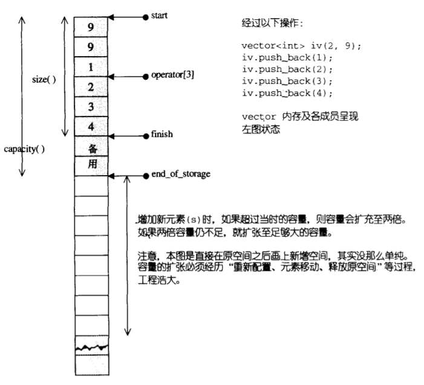
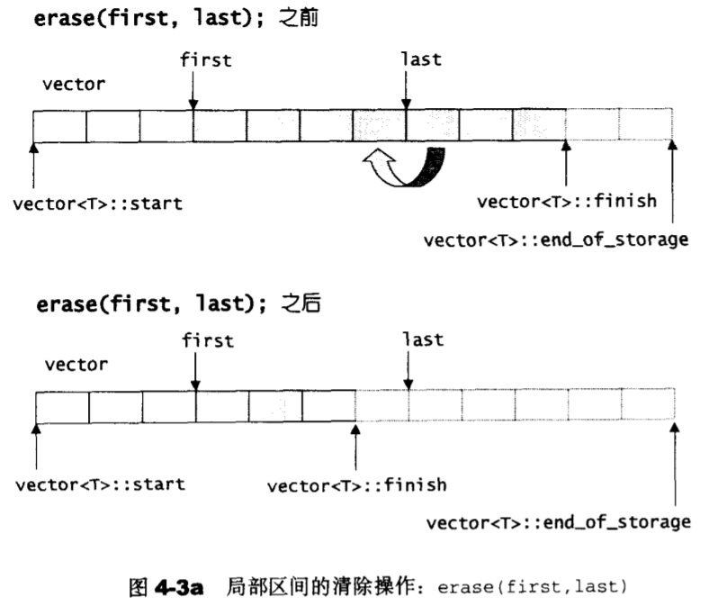

typedef T value_type;
typedef value_type* iterator;
iterator start;
iterator finish;
iterator end_of_storage;vector迭代器类型就是普通指针类型。
内部维护三个指针，start指向内存起始处，finish指向下一个放内存的地址，end_of_storage指向可用内存末尾。

vector的迭代器就是普通指针：
iterator begin() noexcept {
return start;
}
const_iterator begin() const noexcept {
return start;
}
iterator end() noexcept {
return finish;
}
const_iterator end() const noexcept {
return finish;
}
const_iterator cbegin() const noexcept {
return start;
}
const_iterator cend() const noexcept {
return finish;
}以vector(size_type n, const value_type& value)为例。
vector(size_type n, const value_type& value) {
start = allocate_and_fill(n, value);
finish = start + n;
end_of_storage = finish;
}
iterator allocate_and_fill(size_type n, const value_type& x) {
iterator result = data_allocator::allocate(n); //分配n个T类型所需的内存
uninitialized_fill_n(result, n, x); //初始化这n个元素
return result;
}
template <typename ForwardIterator, typename Size, typename T>
inline ForwardIterator uninitialized_fill_n(ForwardIterator first, Size n,
const T& x) {
ForwardIterator cur = first;
for ( ; n > 0; --n, ++cur)
construct(&*cur, x); //在地址&*cur处构造
return cur;
}首先分配n个元素所需要的内存，然后用value初始化这n个元素，最后修改start，finish，end_of_storage三个指针。
以insert(const_iterator position, size_type n, const value_type& val)为例。
template <typename T, typename Alloc>
typename vector<T, Alloc>::iterator vector<T, Alloc>::insert(const_iterator position, size_type n, const value_type& val) {
const size_type elems_before = static_cast<size_type>(position - start);
iterator pos = start + (position - start);
if (static_cast<size_type>(end_of_storage - finish) >= n) { //情况1：已有的空间可以容纳n个元素
const size_type elems_after = finish - pos;
if (n <= elems_after) { //插入点之后的元素个数大于等于待插入的元素个数
copy(position, position + (elems_after - n), pos + n);
uninitialized_copy(position + (elems_after - n), cend(), finish);
fill_n(pos, n, val);
} else { //插入点之后的元素个数小于待插入的元素个数
uninitialized_copy(position, cend(), pos + n);
fill_n(pos, elems_after, val);
uninitialized_fill_n(finish, n - elems_after, val);
}
finish = finish + n;
} else { //情况2：需要重新分配更大的空间
const size_type old_capacity = size();
const size_type new_capacity = old_capacity + max(old_capacity, n); //重新分配更大的内存空间
iterator new_start = data_allocator::allocate(new_capacity);
iterator new_finish = new_start;
iterator new_end_of_storage = new_start + new_capacity;
//todo: move if noexcept
new_finish = uninitialized_copy(cbegin(), position, new_start); //将原地址处的元素拷贝到新的内存空间
new_finish = uninitialized_fill_n(new_finish, n, val);
new_finish = uninitialized_copy(position, cend(), new_finish);
destroy(start, finish); //销毁原来的内存空间
deallocate();
start = new_start;
finish = new_finish;
end_of_storage = new_end_of_storage;
}
return start + elems_before;
}如果已有的空间可以容纳n个新元素，那么直接插入，否则，开辟新的内存空间，然后用原来的元素初始化新内存空间处的元素（实际情况会根据元素的类型是否有noexcept的移动构造函数，决定是拷贝还是移动），最后回收原来的内存。从这里可知，vector在扩容后，原来的迭代器都会失效。
考虑下面的例子：
struct Foo {
Foo(int a) :i(a) {}
Foo(Foo &&rhs) {
i = rhs.i;
cout << "move constructor i = " << i << endl;
}
Foo(const Foo &rhs) {
i = rhs.i;
cout << "copy constructor i = " << i << endl;
}
int i;
};
int main() {
Foo f1(1);
Foo f2(2);
Foo f3(3);
vector<Foo> v; //默认构造函数，没有分配内存空间
v.push_back(f1);
v.push_back(f2);
v.push_back(f3);
}运行后的输出如下：
copy constructor i = 1
copy constructor i = 2
copy constructor i = 1
copy constructor i = 3
copy constructor i = 1
copy constructor i = 2这个例子中Foo虽然有移动构造函数但是并不是noexcept，所以扩容过程中不会调用移动构造函数而是拷贝构造函数，再来看下为什么有这种输出结果。
首先插入f1，此时vector还没分配内存空间，所以先分配容纳1个元素的内存空间，然后调用拷贝构造函数在第一个位置构造一个新的Foo，所以第一行输出copy constructor i = 1。此时内存布局如下:
| f1 |
start finish(end_of_storage)接着插入f2，此时只能容纳一个元素，所以需要扩容，扩容后可以容纳两个元素，在第二个位置用拷贝构造函数拷贝初始化元素2，所以第二行输出copy constructor i = 2，然后将原来内存处第一个元素拷贝到新内存第一个元素处，所以第三行输出copy constructor i = 1。此时内存布局如下：
| f1 , f2 |
start finish(end_of_storage)接着插入f3，原来的空间只能容纳两个元素，所以还是需要扩容，扩容后可以容纳四个元素。首先将f3拷贝构造到新地址第三个位置，所以第四行输出copy constructor i = 3，接着将原来的f1, f2拷贝到新的地址处，所以输出第五行copy constructor i = 1和第六行copy constructor i = 2。此时内存布局如下：
| f1 , f2 , f3 | 备用 |
start finish end_of_storage如果我们给Foo的移动构造函数加上noexcept，那么输出如下：
copy constructor i = 1
copy constructor i = 2
move constructor i = 1
copy constructor i = 3
move constructor i = 1
move constructor i = 2分析过程和上面一样只是扩容过程中的拷贝全部变成了移动。
尽量给自定义的类实现noexcept的移动构造函数，这样的类配合标准库使用时会获得更好的性能。
以erase(const_iterator first, const_iterator last)为例:
template <typename T, typename Alloc>
typename vector<T, Alloc>::iterator vector<T, Alloc>::erase(const_iterator first, const_iterator last) {
iterator erase_start = begin() + (first - cbegin());
iterator result = copy(last, cend(), erase_start); //将last后面的元素拷贝（或移动）到first处。
destroy(result, end()); //析构剩下的元素
finish = result;
return erase_start;
}过程如下：

先看下面的例子：
struct Foo {
Foo(int a) :i(a) {}
Foo(const Foo &rhs) {
i = rhs.i;
}
Foo& operator=(const Foo& rhs) {
cout << "copy assign from " << rhs.i << " to " << i << endl;
i = rhs.i;
return *this;
}
~Foo() {
cout << "destructor i = " << i << endl;
}
int i;
};
int main() {
Foo f1(1);
Foo f2(2);
Foo f3(3);
vector<Foo> v;
v.reserve(4);
v.push_back(f1);
v.push_back(f2);
v.push_back(f3);
v.erase(v.begin());
cout << "end of erase\n";
}输出如下：
copy assign from 2 to 1
copy assign from 3 to 2
destructor i = 3
end of erase
destructor i = 2
destructor i = 3
destructor i = 3
destructor i = 2
destructor i = 1"edn of erase"后面的可以不看，那是离开main函数时析构f1, f2, f3，和vector中的f1，f2输出的，前三行是erase第一个元素输出的信息。我们erase了第一个元素，但是前三行并没有调用第一个元素f1的析构函数，反而是调用了第三个元素f3的析构函数。
实际上根据之前分析的erase过程，不难理解这样的结果。
erase前：
| f1 , f2 , f3 | 备用 |
start finish end_of_storageerase过程：
将第二个元素f2拷贝给第一个元素，将三个元素f3拷贝给第二个元素，最后析构第三个元素f3。
erase后：
| f2 , f3 | 备用 , 备用 |
start finish end_of_storage对于某些类我们必须定义拷贝或者移动赋值运算符，拷贝或者移动赋值运算符具有释放原对象资源的职责。比如这里如果我们没有定义拷贝赋值运算符而是使用默认的拷贝赋值运算符，并且Foo内有指针成员变量，erase f1后，那么f1内的指针将得不到正确的释放。
注意本文展示的代码并非真的STL源码，进行了很多简化，但是不影响原理的分析。